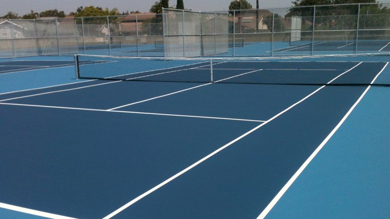
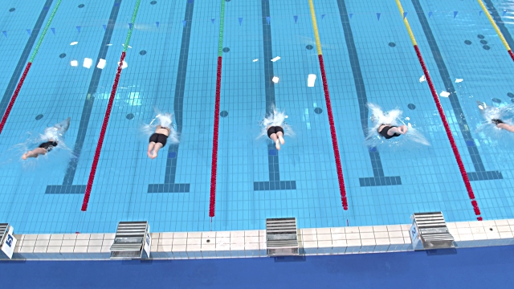
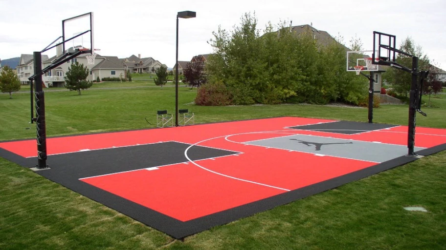
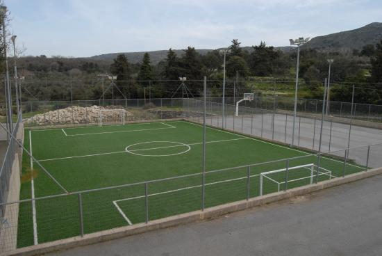
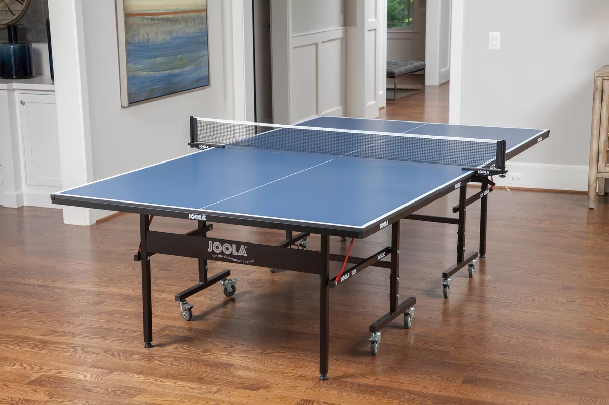
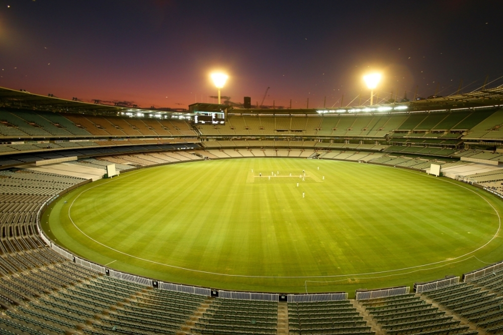
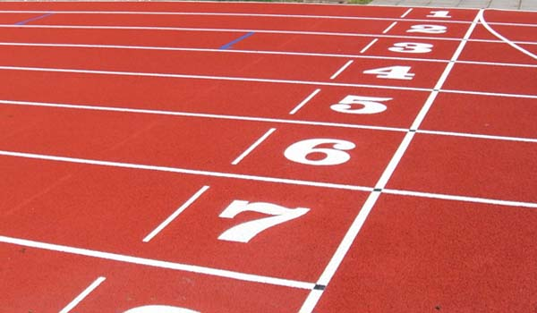
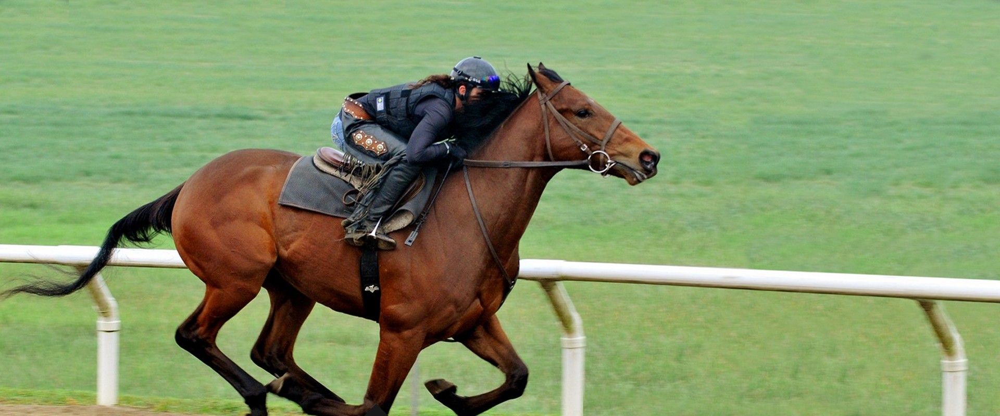

Tennis
Our academy is equipped with three tennis courts of international standards, and provides adequate exposure to all possible playing surfaces (Grass, Clay and Synthetic).
We believe that every tennis trainee has the freedom to choose his / her court according to his / her ability and also must get a chance to experience playing on each surface not
losing hope for a grand slam.
Swimming
Our academy has an all-weather indoor swimming pool with an additional pool for toddlers adjacent to it.
Students enjoy swimming round the year. Apart from being a competitive sport, swimming is a lifesaving activity and is compulsory for every student in the campus.
Badminton
The gymnasium houses two badminton courts of international standards for trainees to hone their skills.
Basketball
Our academy has an indoor as well as an outdoor court.
Football
The academy has a football field of international size.
Table Tennis
The multipurpose hall houses the facility for Table Tennis.
Cricket
the academy has a cricket ground just 50m away from main office with all equipments.
Squash
The academy has two international standard Squash courts.
Athletics
An athletic track surrounds the football field for the athletes.
Multipurpose Hall
Multipurpose sports hall with facilities for table tennis/snooker/billiards and an indoor gym is the stronghold of the sports campus.
Mini Golf Course
At our academy, a well landscaped mini golf course welcomes the visitor’s right at the front gateway.
A golf course for beginners to appease the students of golf for pleasure and later to be taken as a profession lets
Our academy give the opportunity to aspiring sports persons a chance to live their dreams.
Equestrian
Academy offers horse riding facilities.